កំណត់និយមន័យនិងផលធៀបរួមនៃស៊ីតធរណីមាត្រ
កំណត់តួទី \(n\) នៃស៊ីតធរណីមាត្រ
បង្ហាញផលគុណតួស្មើចម្ងាយពីតួចុង
គណនាផលបូកតួនៃស៊ីតធរណីមាត្រ
គណនាផលបូកតួនៃស៊ីតធរណីមាត្រអនន្តតួ ។
និយមន័យស៊ីតធរណីមាត្រ
គេមានស៊ីត \(2, 6, 18, 54, 162, \ldots\) ។ គេបាន
ស៊ីតធរណីមាត្រ គឺជាស៊ីតនៃចំនួនពិតដែលតួនីមួយៗ (ក្រៅពីតួទី \(1\)) ស្មើនឹងតួមុនបន្ទាប់គុណនឹងចំនួនថេរ \(q\) ដែល \(q \ne 0\) ។ ចំនួនថេរ \(q\) នេះ ហៅថាផលធៀបរួមនៃស៊ីតធរណីមាត្រ ។
ផលធៀបរួមនៃស៊ីតធរណីមាត្រ តាងដោយ \(q\) ដែល \(q \ne 0\) ។
តួទី \(n\) នៃស៊ីតធរណីមាត្រ
គេមានស៊ីតធរណីមាត្រ \(2, 6, 18, 54, 162, \ldots\) ។ គេបាន
តួទី \(n\) នៃស៊ីតធរណីមាត្រកំណត់ដោយ ៖ \(a_n = a_1 \times q^{n-1}\) ។
គេមានស៊ីតធរណីមាត្រ \(6, 12, 24, 48, \ldots\) ។
គណនាតួទី \(14\)
តើចំនួន \(384\) ជាតួទីប៉ុន្មាននៃស៊ីត?
តាងតួទីមួយ \(a_1 = 6\) តួទីពីរ \(a_2 = 12\) គេបានផលធៀបរួម \(q = \dfrac{a_2}{a_1} = \dfrac{12}{6} = 2\) ។
តួទី \(14\) នៃស៊ីតត្រូវនឹង \(a_{14}\) ។ តាមរូបមន្ត គេបាន \(a_n = 6 \times 2^{n-1}\) នោះ \(a_{14} = 6 \times 2^{13} = 6 \times 8192 = 49152\) ។ ដូច្នេះតួទី \(14\) គឺ \(a_{14} = 49152\) ។
តាមរូបមន្ត \(a_n = a_1 \times q^{n-1}\) ដោយ \(a_n = 384\) គេបាន
\[\begin{gathered} 384 = 6 \times 2^{n-1} \iff 64 = 2^{n-1}\\ \iff 2^6 = 2^{n-1} \iff 6 = n - 1 \Rightarrow n = 7 \end{gathered}\]ដូច្នេះចំនួន \(384\) ជាតួទី \(7\) នៃស៊ីត ។
ប្រជាជននៅទីក្រុងមួយមានចំនួន \(2\) លាននាក់ក្នុងឆ្នាំ \(2000\) ហើយមានកំណើន \(4\%\) ក្នុងមួយឆ្នាំ ។ បង្ហាញថាចំនួនប្រជាជនប្រចាំឆ្នាំបង្កើតបានជាស៊ីតធរណីមាត្រ និងព្យាករទុកនូវចំនួនប្រជាជនក្នុងឆ្នាំ \(2009\) ។
តាងចំនួនប្រជាជនក្នុងឆ្នាំ \(2000\) ដោយ \(a_1 = 2\) លាននាក់ នោះចំនួនប្រជាជនក្នុងឆ្នាំ \(2001\) នឹងមាន \(2 + 2(0.04) = 2(1.04)\) លាននាក់ ។
ចំនួនប្រជាជនក្នុងឆ្នាំ \(2002\) នឹងមាន \(a_3 = 2(1.04)^2\) លាននាក់ ។
ចំនួនប្រជាជនក្នុងឆ្នាំ \(2003\) នឹងមាន \(a_4 = 2 \times (1.04)^3\) លាននាក់ ។
ចំនួនប្រជាជនប្រចាំឆ្នាំបង្កើតបានជាស៊ីតធរណីមាត្រ ។ ដូច្នេះ ចំនួនប្រជាជនក្នុងឆ្នាំ \(2009\) នឹងមាន \(a_{10} = 2 \times (1.04)^9 = 2\,846\,624\) នាក់ ។
គេមានស៊ីតធរណីមាត្រ \(3, 12, 48, 192, \ldots\) ។
គណនាតួទី \(9\) ។
តើចំនួន \(12288\) ជាតួទីប៉ុន្មាននៃស៊ីត?
គ្រួសារមួយសម្រេចចិត្តបើកគណនីសន្សំប្រាក់ជាមុនសម្រាប់ការសិក្សារបស់កូនគាត់ ។ នៅពេលថ្ងៃចាប់កំណើតកូនរបស់គាត់ គាត់បានយកប្រាក់ចំនួន \(100\,000\) រៀលទៅផ្ញើនៅធនាគារដោយបានទទួលអត្រាការប្រាក់សមាស \(6\%\) ក្នុងមួយឆ្នាំ ។ ធនាគារទូទាត់អត្រាការប្រាក់មួយឆ្នាំម្តង ។
កំណត់ចំនួនប្រាក់សរុបនៅរាល់ចុងឆ្នាំនីមួយៗនៃបួនឆ្នាំដំបូង និងកំណត់ចំនួនប្រាក់សរុបនៅចុងឆ្នាំទី \(n\) ។
កំណត់ចំនួនប្រាក់សរុបនៅចុងឆ្នាំទី \(21\) ។
មើលចម្លើយ
ក. \(a_9 = 196608\) ខ. \(a_7 = 12288\) ។
ក. \(a_1 = 106000\), \(a_2 = 112360\), \(a_3 = 119101.6\), \(a_4 = 126247.696\), \(a_n = 100000\left(1 + \dfrac{6}{100}\right)^n\)
ខ. \(a_{21} = 339956.36\) ។
ផលគុណតួស្មើចម្ងាយពីតួចុង
គេមានស៊ីតធរណីមាត្រ \(a_1, a_2, a_3, a_4, a_5, a_6\) ។ \(a_1\) និង \(a_6\) ហៅថាតួចុង \(a_2\) និង \(a_5\) ហើយ \(a_3\) និង \(a_4\) ហៅថាតួនៅស្មើចម្ងាយពីតួចុង ។
បង្ហាញថា \(a_1 \times a_6 = a_2 \times a_5 = a_3 \times a_4\) ។
តាមរូបមន្តតួទី \(n\) នៃស៊ីតធរណីមាត្រ \(a_n = a_1 \times q^{n-1}\) គេបាន
បើ \(a_1, a_2, a_3, \ldots, a_p, \ldots, a_{n-p+1}, \ldots, a_{n-2}, a_{n-1}, a_n\) ជាស៊ីតធរណីមាត្រ ។ តួ \(a_1\) និង \(a_n\) ជាតួចុង ហើយ \(a_2\) និង \(a_{n-1}\), \(a_3\) និង \(a_{n-2}\), \(\ldots\), \(a_p\) និង \(a_{n-p+1}\) ជាតួស្មើចម្ងាយពីតួចុង នោះ
ផលគុណតួស្មើចម្ងាយពីតួចុងស្មើនឹងផលគុណតួចុងទាំងពីរ ។ គេកំណត់សរសេរ \(a_p \times a_{n-p+1} = a_1 \times a_n\) ។
ករណីពិសេស ៖ បីចំនួនតគ្នា \(a, b\) និង \(c\) ជាស៊ីតធរណីមាត្រសមមូល \(\dfrac{b}{a} = \dfrac{c}{b} = q\) ឬ \(a \times c = b^2\) ឬ (\(b = \sqrt{a \times c}\) ហៅថា មធ្យមធរណីមាត្រ \(a\) និង \(c\)) ។
គេឱ្យបីចំនួនតគ្នា \(a, b\) និង \(c\) ជាស៊ីតធរណីមាត្រ ។ បង្ហាញថាបីចំនួនតគ្នា \(a^2, b^2\) និង \(c^2\) ក៏ជាស៊ីតធរណីមាត្រដែរ ។
បីចំនួនតគ្នា \(a, b\) និង \(c\) ជាស៊ីតធរណីមាត្រនោះ \(b^2 = a \times c\) ។ លើកអង្គទាំងពីរជាការេ គេបាន \((b^2)^2 = (a \times c)^2 = a^2 \times c^2\) ។
ដូច្នេះ បីចំនួនតគ្នា \(a^2, b^2\) និង \(c^2\) ជាស៊ីតធរណីមាត្រ ។
តើគេត្រូវបន្ថែមចំនួនប៉ុន្មានទៅលើចំនួន \(3, 24, 94\) ដើម្បីឱ្យបីចំនួនតគ្នាជាស៊ីតធរណីមាត្រ?
រកមធ្យមធរណីមាត្រនៃពីរចំនួន \(4\) និង \(9\) ។
គេឱ្យស៊ីតធរណីមាត្រមួយដែល \(a_3 = 4\) និង \(a_5 = 36\) ។ គណនា \(a_1\) និងផលធៀបរួម \(q\) ។
មើលចម្លើយ
ចំនួនត្រូវថែម \(x = 6\)
\(\sqrt{4 \times 9} = 6\)
\(q = -3\), \(a_1 = \frac{4}{9}\) និង \(q = 3\), \(a_1 = \frac{4}{9}\) ។
ផលបូក \(n\) តួដំបូងនៃស៊ីតធរណីមាត្រ
គណនាផលបូក \(7\) តួដំបូងនៃស៊ីតធរណីមាត្រ \(1, 2, 4, 8, 16, 32, 64\) ។
តាង \(S\) ជាផលបូកស៊ីតធរណីមាត្រដែលមានផលធៀបរួមស្មើនឹង \(2\) ។ គេបាន
គេអាចយកឧទាហរណ៍ខាងលើ ដើម្បីកំណត់រូបមន្តផលបូក \(n\) តួដំបូងនៃស៊ីតធរណីមាត្រ ។ បើគេយក \(S_n\) ជាផលបូក \(n\) តួដំបូងនៃស៊ីតធរណីមាត្រដែលមានតួទីមួយ \(a_1\) និងផលធៀបរួម \(q\) នោះ គេបាន
ផលបូក \(n\) តួដំបូងនៃស៊ីតធរណីមាត្រដែលមានតួទីមួយ \(a_1\) និងផលធៀបរួម \(q\) ដែល \(q \ne 1\) ស្មើនឹង
គណនាផលបូក \(7\) តួដំបូងនៃស៊ីតធរណីមាត្រ \(5 + 10 + 20 + 40 + \ldots\) ។
គណនាផលបូកតួនៃស៊ីតធរណីមាត្រ \(2 + 6 + 18 + \ldots + 1458\) ។
តាង \(S = 5 + 10 + 20 + 40 + \ldots\) ជាផលបូកតួនៃស៊ីតធរណីមាត្រដែលមានតួទី \(1\) គឺ \(a_1 = 5\) ផលធៀបរួម \(q = 2\) ។ តាមរូបមន្ត \(S_n = \dfrac{a_1(q^n - 1)}{q - 1}\) ។ បើ \(n = 7\) គេបាន
\[S_7 = \frac{5(2^7 - 1)}{2 - 1} = 5(128 - 1) = 635\]ដូច្នេះ ផលបូក \(7\) តួដំបូងនៃស៊ីតធរណីមាត្រគឺ \(635\) ។តាង \(S = 2 + 6 + 18 + \ldots + 1458\) ដែល \(a_1 = 2\), \(a_n = 1458\) និងផលធៀបរួម \(q = 3\) ។ តាមរូបមន្តតួទី \(n\) គេបាន
\[\begin{gathered} a_n = a_1 q^{n-1},\ 1458 = 2 \times 3^{n-1},\ 729 = 3^{n-1},\\ 3^6 = 3^{n-1},\ 6 = n - 1 \Rightarrow 7 = n \end{gathered}\]នោះ \(S\) ជាផលបូក \(7\) តួដំបូងនៃស៊ីតធរណីមាត្រ ។ តាមរូបមន្ត \(S_n = \dfrac{a_1(q^n - 1)}{q - 1}\) គេបាន\[S_7 = \frac{2(3^7 - 1)}{3 - 1} = \frac{2(2187 - 1)}{2} = 2186\]ដូច្នេះ \(2 + 6 + 18 + \ldots + 1458 = 2186\) ។
ស្តេចឥណ្ឌាឈ្មោះស៊ីរ៉ាម បានបញ្ជាឱ្យជាងម្នាក់ធ្វើក្តារចត្រង្គ ហើយសន្យាថានឹងជូនរង្វាន់តាមតម្រូវការនៃជាងនោះចង់បាន ។ ពេលធ្វើរួច ជាងនោះស្នើសុំគ្រាប់ស្រូវទាំងអស់ដែលដាក់ក្នុងក្រឡាចត្រង្គទាំង ហើយរបៀបដាក់មានដូចតទៅ ៖ មួយគ្រាប់ក្នុងក្រឡាទី \(1\) ពីរគ្រាប់ក្នុងក្រឡាទី \(2\) បួនគ្រាប់ក្នុងក្រឡាទី \(3\) ប្រាំបីគ្រាប់ក្នុងក្រឡាទី \(4\), \(\ldots\), ចំនួនគ្រាប់ស្រូវក្នុងក្រឡាបន្ទាប់មកស្មើនឹងចំនួនគ្រាប់ស្រូវក្រឡាមុនគុណនឹង \(2\) ។ គណនាផលបូកនៃគ្រាប់ស្រូវទាំងអស់ដែលត្រូវដាក់លើក្រឡាចត្រង្គទាំង \(64\) ក្រឡា ។
តាមបម្រាប់ចំនួនគ្រាប់ស្រូវដែលដាក់លើក្រឡាចត្រង្គទាំង \(64\) ក្រឡាបង្កើតបានជាស៊ីតធរណីមាត្រ \(1, 2, 4, 8, \ldots\) ឬ \(2^0, 2^1, 2^2, 2^3, \ldots\) ដែលមាន \(a_1 = 1\) និងផលធៀបរួម \(q = 2\) ។
តាមរូបមន្ត \(S_n = \dfrac{a_1(q^n - 1)}{q - 1}\) គេបាន
គ្រាប់ស្រូវចំនួន \(37000\) គ្រាប់ប្រហែល \(1\text{ kg}\) នោះស្រូវទម្ងន់ \(1\text{ t} \approx 37000000\) គ្រាប់ ។ ដូច្នេះស្រូវដែលដាក់លើក្រឡាចត្រង្គទាំង \(64\) ក្រឡាប្រហែល \(4986 \times 10^8\text{ t}\) ។ គេដឹងថាទិន្នផលស្រូវប្រចាំឆ្នាំបច្ចុប្បន្នរបស់កម្ពុជាប្រហែល \(5 \times 10^6\text{ t}\) ។
គេមានស៊ីតធរណីមាត្រ \(6\,;\ 3\,;\ 1.5\,;\ 0.75\,;\ldots\) ។ គណនា
តួទី \(7\)
ផលបូក \(7\) តួដំបូងនៃស៊ីតធរណីមាត្រ ។
គណនា \(S_n = 7 + 77 + 777 + 7777 + \ldots + \underbrace{77\ldots7}_{n \text{ ដងលេខ } 7}\) ។
លោក \(B\) បានដាក់ប្រាក់ \(100\$\) ទៅផ្ញើក្នុងគណនីសន្សំនៃធនាគារមួយដោយទទួលបានអត្រាការប្រាក់សមាស \(10\$\) ក្នុងមួយឆ្នាំ ។ ធនាគារទូទាត់អត្រាការប្រាក់មួយខែម្តង ។ ប្រាក់សរុបដែលលោក \(B\) ទទួលបាននៅចុងឆ្នាំទី \(5\) គឺ
\[\begin{aligned} A = {}&100 \times \left(1 + \frac{0.10}{12}\right) + 100 \times \left(1 + \frac{0.10}{12}\right)^2\\ &+ 100\left(1 + \frac{0.10}{12}\right)^3 + \ldots + 100\left(1 + \frac{0.10}{12}\right)^{60} \end{aligned}\]។ គណនា \(A\) ។ប៉ោលមួយយោលដំបូងបានប្រវែងធ្នូ \(18\text{ cm}\) និងយោលជាបន្តបន្ទាប់មកទៀត ដោយម្តងៗសល់ប្រវែងធ្នូ \(95\%\) នៃប្រវែងធ្នូមុន ។
កំណត់ប្រវែងធ្នូបន្ទាប់ពីយោលលើកទី \(10\) ។
ក្រោយពីយោលបាន \(15\) ដង ។ កំណត់ប្រវែងធ្នូសរុបនៃការយោលនោះ ។
មើលចម្លើយ
ក. \(a_7 = \dfrac{3}{32}\) ខ. \(S_7 = \dfrac{381}{32}\) ។
\(S_n = \dfrac{7}{81}(10^{n+1} - 9n - 10)\) ។
\(A = 7808.23\) ។
ក. \(a_{10} = 11.34\) ខ. \(S_{15} = 193.21\) ។
ស៊ីតធរណីមាត្រអនន្តតួ
ពិនិត្យស៊ីតធរណីមាត្រអនន្តតួ \(18 + 1.8 + 0.18 + 0.018 + 0.0018 + \ldots\) ដែលមានតួទីមួយ \(a_1 = 18\) និងផលធៀបរួម \(q = \dfrac{1}{10}\) ។ គេបាន
ពិនិត្យផលបូកស៊ីតធរណីមាត្រអនន្តតួ \(a_1 + a_1 q + a_1 q^2 + \ldots + a_1 q^{n-1} + \ldots\) ដែលមានតួទីមួយ \(a_1\) និងផលធៀបរួម \(q\) ។ គេបាន
បើ \(|q| < 1\) នោះ \(q^n\) កាន់តែតូចទៅៗ កាលណាចំនួនតួ \(n\) កាន់តែធំទៅៗមានន័យថា \(q^n \to 0\) ពេល \(n \to +\infty\) គេបាន \(S_n = 0 - \dfrac{a_1}{q - 1} = \dfrac{a_1}{1 - q}\) ពេល \(n \to +\infty\) ។ ដូច្នេះ \(S_\infty = \dfrac{a_1}{1 - q}\) ។
ផលបូកតួនៃស៊ីតធរណីមាត្រអនន្តតួ \(a_1 + a_1 q + a_1 q^2 + \ldots + a_1 q^{n-1} + \ldots\) ដែល \(|q| < 1\) កំណត់ដោយ \(S_\infty = \dfrac{a_1}{1 - q}\) ។
បើ \(|q| \ge 1\) នោះ \(S_\infty\) មិនអាចកំណត់បាន ។
គណនាផលបូកតួនៃស៊ីតធរណីមាត្រអនន្តតួ \(6 + 2 + \dfrac{2}{3} + \dfrac{2}{9} + \ldots\) ។
\(6 + 2 + \frac{2}{3} + \frac{2}{9} + \ldots\) ជាផលបូកតួនៃស៊ីតធរណីមាត្រអនន្តតួដែលមាន \(a_1 = 6\), \(q = \frac{1}{3}\) ។ តាមរូបមន្ត \(S_\infty = \dfrac{a_1}{1 - q}\) គេបាន \(S_\infty = \dfrac{6}{1 - \frac{1}{3}} = 9\) ។
សរសេរចំនួនទសភាគខួប \(4.\overline{57}\) ជាចំនួនសនិទានដែលមានទម្រង់ \(\dfrac{a}{b}\) ។
\(4.\overline{57} = 4 + 0.57 + 0.0057 + 0.000057 + \ldots\) ចាប់ពីតួទី \(2\) ទៅជាផលបូកនៃស៊ីតធរណីមាត្រអនន្តតួដែលមាន \(a_1 = 0.57\), \(q = \dfrac{1}{100} = 0.01\) ។ តាមរូបមន្ត \(S_\infty = \dfrac{a_1}{1 - q}\) គេបាន
គេយោលប៉ោលមួយ (ដូចរូបខាងស្តាំ) ។ លើកដំបូងបានធ្នូមួយប្រវែង \(24\text{ dm}\) បន្ទាប់មកប្រវែងធ្នូថយចុះ \(20\%\) ជាបន្តបន្ទាប់ ។ កំណត់ប្រវែងគន្លងសរុបនៃលំយោលប៉ោលចាប់ពីពេលដំបូងដល់ពេលវាឈប់ ។
%22 stroke-opacity=%221%22 stroke-miterlimit=%2210%22 d=%22M -49.88 68.03 L 49.89 68.03 %22 transform=%22matrix(0.99, 0, 0, -0.99, 52.66, 70.92)%22/%3E%3Cg clip-path=%22url(%23clip-0)%22%3E%3Cpath fill=%22none%22 stroke-width=%220.39%22 stroke-linecap=%22butt%22 stroke-linejoin=%22miter%22 stroke=%22rgb(0%25, 0%25, 0%25)%22 stroke-opacity=%221%22 stroke-miterlimit=%2210%22 d=%22M -0.00 68.03 L -36.28 4.53 M -0.00 68.03 L 36.28 4.53 %22 transform=%22matrix(0.99, 0, 0, -0.99, 52.66, 70.92)%22/%3E%3C/g%3E%3Cpath fill-rule=%22nonzero%22 fill=%22rgb(94.79%25, 94.79%25, 94.79%25)%22 fill-opacity=%221%22 d=%22M 22.28 66.42 C 22.28 63.32 19.76 60.80 16.66 60.80 C 13.55 60.80 11.03 63.32 11.03 66.42 C 11.03 69.53 13.55 72.05 16.66 72.05 C 19.76 72.05 22.28 69.53 22.28 66.42 Z M 94.28 66.42 C 94.28 63.32 91.76 60.80 88.66 60.80 C 85.55 60.80 83.03 63.32 83.03 66.42 C 83.03 69.53 85.55 72.05 88.66 72.05 C 91.76 72.05 94.28 69.53 94.28 66.42 Z M 94.28 66.42 %22/%3E%3Cpath fill=%22none%22 stroke-width=%220.39%22 stroke-linecap=%22butt%22 stroke-linejoin=%22miter%22 stroke=%22rgb(0%25, 0%25, 0%25)%22 stroke-opacity=%221%22 stroke-dasharray=%220.39 0.99%22 stroke-miterlimit=%2210%22 d=%22M -36.28 4.53 L 36.28 4.53 %22 transform=%22matrix(0.99, 0, 0, -0.99, 52.66, 70.92)%22/%3E%3Cpath fill=%22none%22 stroke-width=%220.39%22 stroke-linecap=%22butt%22 stroke-linejoin=%22miter%22 stroke=%22rgb(0%25, 0%25, 0%25)%22 stroke-opacity=%221%22 stroke-miterlimit=%2210%22 d=%22M -33.67 -2.46 C -12.97 -14.41 12.97 -14.41 33.66 -2.46 %22 transform=%22matrix(0.99, 0, 0, -0.99, 52.66, 70.92)%22/%3E%3Cpath fill=%22none%22 stroke-width=%220.39%22 stroke-linecap=%22round%22 stroke-linejoin=%22round%22 stroke=%22rgb(0%25, 0%25, 0%25)%22 stroke-opacity=%221%22 stroke-miterlimit=%2210%22 d=%22M -2.07 2.39 C -1.69 0.95 -0.84 0.27 0.00 -0.00 C -0.85 -0.27 -1.69 -0.95 -2.07 -2.39 %22 transform=%22matrix(-0.85, -0.49, -0.49, 0.85, 19.08, 73.27)%22/%3E%3Cpath fill=%22none%22 stroke-width=%220.39%22 stroke-linecap=%22round%22 stroke-linejoin=%22round%22 stroke=%22rgb(0%25, 0%25, 0%25)%22 stroke-opacity=%221%22 stroke-miterlimit=%2210%22 d=%22M -2.07 2.39 C -1.69 0.95 -0.85 0.27 -0.00 0.00 C -0.84 -0.27 -1.69 -0.95 -2.07 -2.38 %22 transform=%22matrix(0.85, -0.49, -0.49, -0.85, 86.23, 73.27)%22/%3E%3C/svg%3E%0A)
គេត្រូវកំណត់ផលបូកតួនៃស៊ីតធរណីមាត្រអនន្តតួដែលមានតួទី \(1\) គឺ \(a_1 = 24\) ហើយផលធៀបរួម \(q = 80\%\), \(|q| < 1\) ។ តាមរូបមន្តស៊ីតអនន្តតួ \(S_\infty = \dfrac{a_1}{1 - q}\) ឬ \(S_\infty = \dfrac{24}{1 - 0.8} = 120\) ។
ដូច្នេះប្រវែងគន្លងសរុបនៃលំយោលប៉ោល ពីពេលយោលដំបូងដល់ពេលវាឈប់ស្មើនឹង \(120\text{ dm}\) ។
គណនាផលបូកស៊ីតធរណីមាត្រអនន្តតួ \(16 + 12 + 9 + \ldots\) ។
សរសេរចំនួនទសភាគខួប \(0.\overline{235}\) ជាចំនួនសនិទានដែលមានទម្រង់ \(\frac{a}{b}\) ។
មើលចម្លើយ
\(S_\infty = 64\)
\(0.\overline{235} = \dfrac{235}{999}\) ។
មេរៀនសង្ខេប ជំពូកទី ១
ស៊ីតនៃចំនួនពិត ជាអនុគមន៍លេខដែលកំណត់ពី \(\mathbb{N}\) ទៅ \(\mathbb{R}\) ។
ស៊ីតនព្វន្ត ជាស៊ីតនៃចំនួនពិតដែលមានតួនីមួយៗ (ក្រៅពីតួទី \(1\)) ស្មើនឹងតួមុនបន្ទាប់បូកចំនួនថេរ \(d\) មួយ (ហៅថាផលសងរួម \(d = a_{n+1} - a_n\)) ។
រូបមន្តតួទូទៅនៃស៊ីតនព្វន្ត \(a_n = a_1 + (n - 1)\times d\) ។
ផលបូក \(n\) តួនៃស៊ីតនព្វន្ត \(S_n = \dfrac{(a_1 + a_n)\times n}{2}\) ។
ស៊ីតធរណីមាត្រជាស៊ីតចំនួនពិតដែលតួនីមួយ (ក្រៅពីតួទី \(1\)) ស្មើនឹងតួមុនបន្ទាប់គុណនឹងចំនួនថេរ \(q\) ដែល \(q \ne 0\) ។ ចំនួនថេរ \(q\) នេះហៅថាផលធៀបរួមស៊ីតធរណីមាត្រ ។
រូបមន្តតួទូទៅនៃស៊ីតធរណីមាត្រ \(a_{n+1} = a_n\times q\), \(a_n = a_1\times q^{n-1}\) ។
ផលបូក \(n\) តួដំបូងនៃស៊ីតធរណីមាត្រ \(S_n = \dfrac{a_1(q^n - 1)}{q - 1}\), \((q \ne 1)\) ។
ផលបូកស៊ីតធរណីមាត្រអនន្តតួ \(S_\infty = \dfrac{a_1}{1 - q}\), \((|q| < 1)\) ។
លំហាត់ជំពូកទី ១
តួទី \(5\) នៃស៊ីតនព្វន្តស្មើ \(14\) និងតួទី \(12\) ស្មើ \(35\) ។ គណនាផលសងរួម តួទី \(1\) និងតួទី \(n\) ។
ផលបូកនៃ \(n\) តួដំបូងនៃស៊ីតមួយកំណត់ដោយ \(S_n = n^2 + n\) ។ គណនាតួទី \(5\) នៃស៊ីត និងបង្ហាញថាតួនៃស៊ីតនេះជាស៊ីតនព្វន្ត ។
តួទី \(3\) នៃស៊ីតធរណីមាត្រស្មើ \(3\) និងតួទី \(6\) ស្មើនឹង \(\dfrac{3}{8}\) ។ គណនាផលធៀបរួមតួទី \(1\) និងផលបូក \(8\) តួដំបូង ។
គណនា \(a\) ដើម្បីឱ្យបីចំនួន \((a - 3)\), \((a + 1)\) និង \((4a - 2)\) ជាបីតួតគ្នានៃស៊ីតធរណីមាត្រ ។
គេឱ្យបួនចំនួនជាស៊ីតធរណីមាត្រ ។ គណនាតួទី \(2\) និងទី \(3\) នៃស៊ីត បើគេដឹងថាតួទី \(1\) ស្មើនឹង \(6\) ហើយតួទី \(4\) ស្មើនឹង \(162\) ។
គេទិញផ្ទះមួយតម្លៃ \(30000\) ដុល្លារ ។ អ្នកទិញត្រូវបង់ប្រាក់ជា \(6\) ដំណាក់កាលដែលបង្កើតបានជាស៊ីតធរណីមាត្រមានផលធៀបរួម \(\dfrac{9}{10}\) ។ កំណត់ប្រាក់ដែលត្រូវបង់តាមដំណាក់កាលនីមួយៗ ។
គេមានស៊ីតនព្វន្ត \((U_n)\) និង \((V_n)\) កំណត់ដោយ \(U_1 = 3\) និងផលសងរួមស្មើ \(3\) និង \(V_1 = 4\) និងផលសងរួមស្មើ \(2\) ។
កំណត់ \(U_n\) និង \(V_n\) ជាអនុគមន៍នៃ \(n\) ។
គេមានស៊ីត \((W_n)\) កំណត់ដោយ \(W_n = \dfrac{U_n}{V_n}\) ។ បង្ហាញថាស៊ីត \((W_n)\) ជាស៊ីតកើន និងកំណត់ \(n\) ដើម្បីឱ្យ \(W_n - W_{n-1} = \dfrac{1}{28}\) ។
កំណត់ផលសងរួមនិងតួទីមួយ \(U_1\) នៃស៊ីតនព្វន្ត \((U_n)_{n \in \mathbb{N}}\) កើននិងដឹងថា \(\begin{cases} U_1^2 + U_2^2 + U_3^2 = 98\\ U_1 - U_2 + U_3 = 4 \end{cases}\) ។ គណនា \(U_{10}\) និងផលបូក \(10\) តួដំបូងនៃស៊ីត ។
តួដំបូងនៃស៊ីតធរណីមាត្រស្មើ \(3\) ហើយមានផលធៀបរួម \(r\) ដែលតម្លៃដាច់ខាតនៃ \(r\) តូចជាង \(1\) ។ ផលបូក \(3\) តួដំបូងស្មើ \(\dfrac{8}{9}\) នៃផលបូក \(6\) តួដំបូង ។ គណនាផលបូកស៊ីតធរណីមាត្រអនន្តតួ ។
ដោះស្រាយក្នុង \(\mathbb{R}\) សមីការ \(3x^2 - 8x + 4 = 0\) \((E)\) ។
គេមាន \((U_n)_{n \in \mathbb{N}}\) ជាស៊ីតធរណីមាត្រកើនដែលមាន \(U_3\) និង \(U_4\) នៃស៊ីតនេះ ជាចម្លើយនៃសមីការ \((E)\) ។ ក. ទាញរកផលធៀបរួមនៃស៊ីតនេះ ។ ខ. គណនាតួទីមួយ \(U_1\) នៃស៊ីត ។
ទំព័រសៀវភៅដើម
បើកមើលទំព័រសៀវភៅពុម្ព
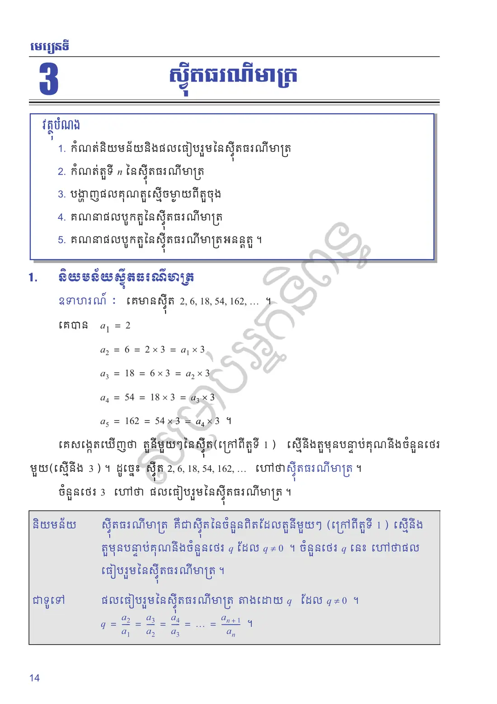
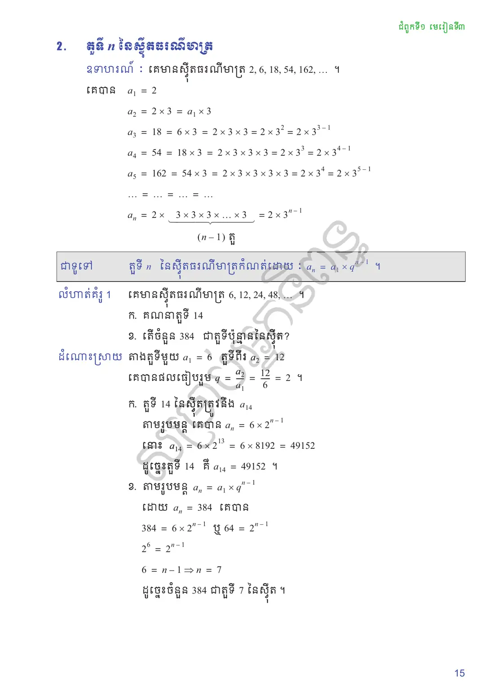
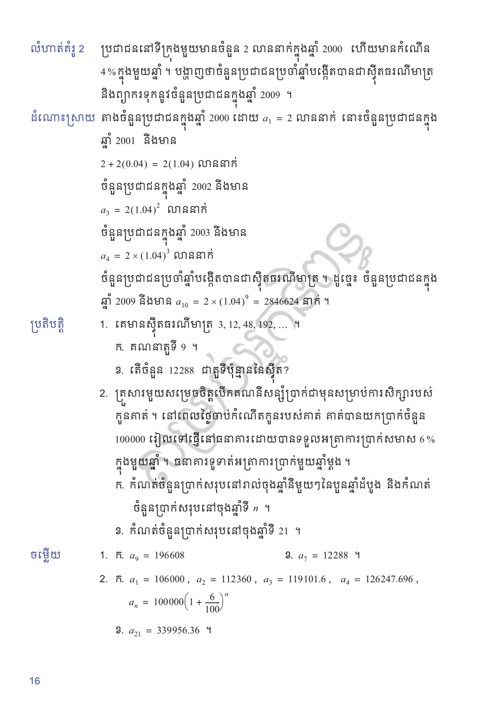
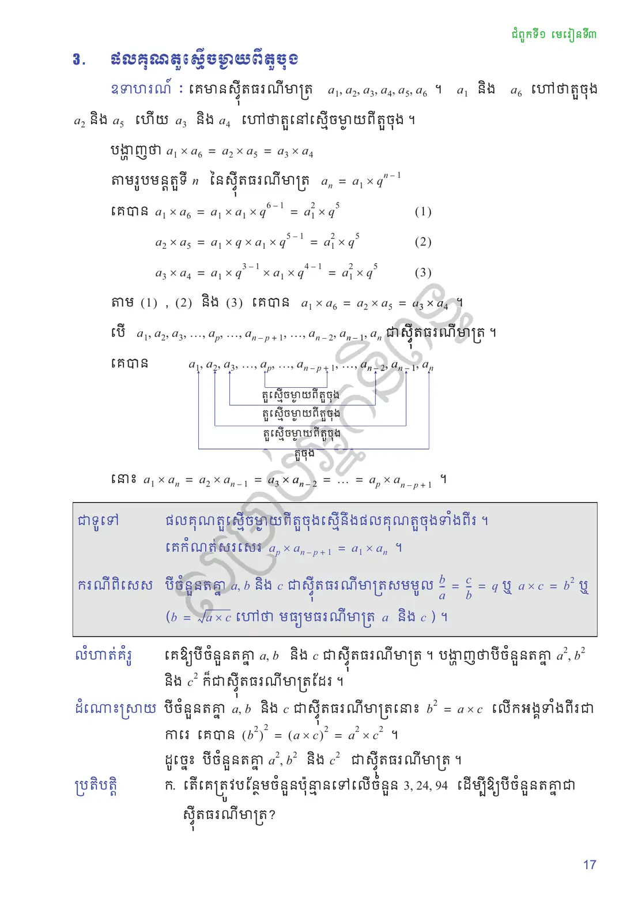
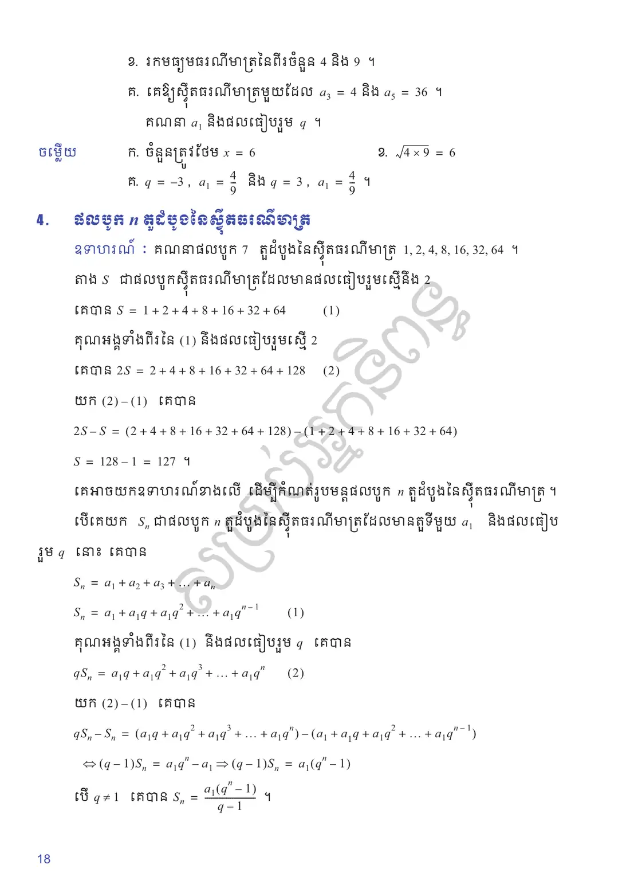
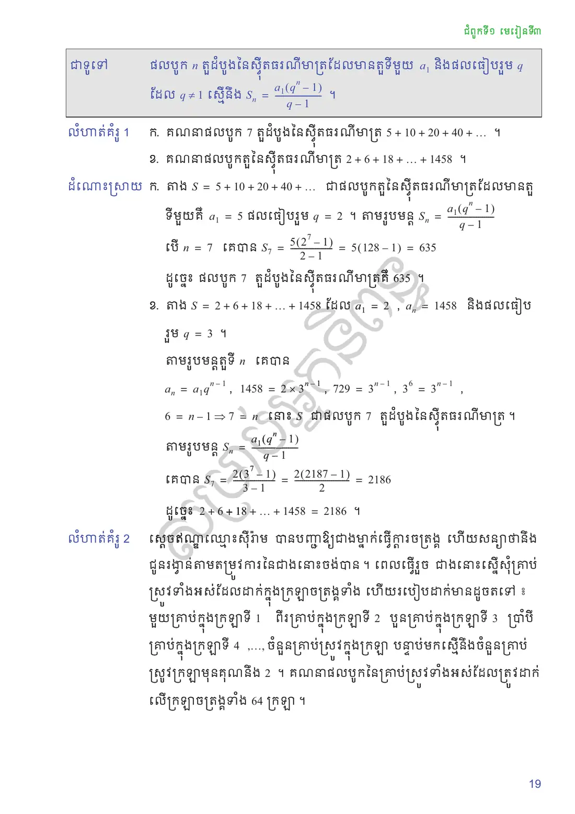
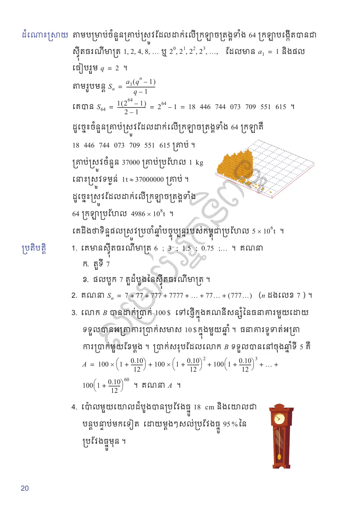
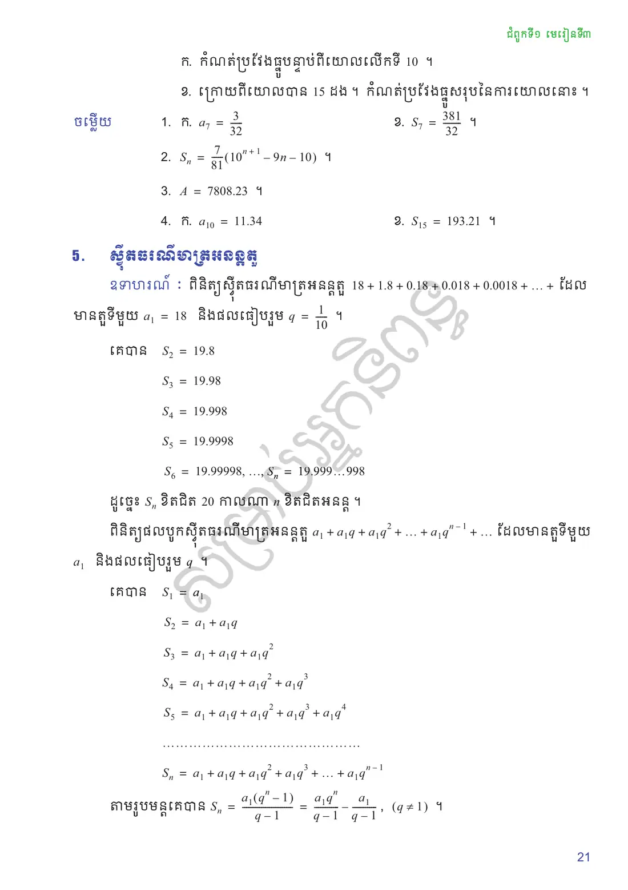
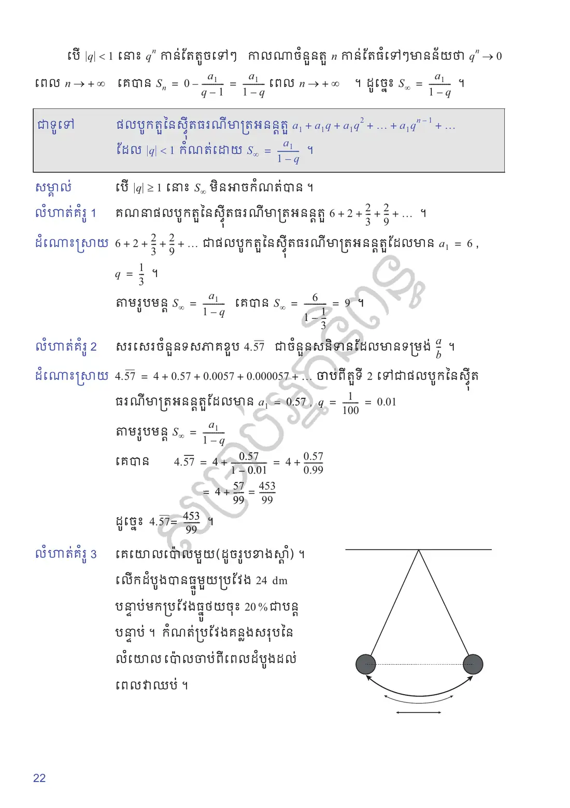
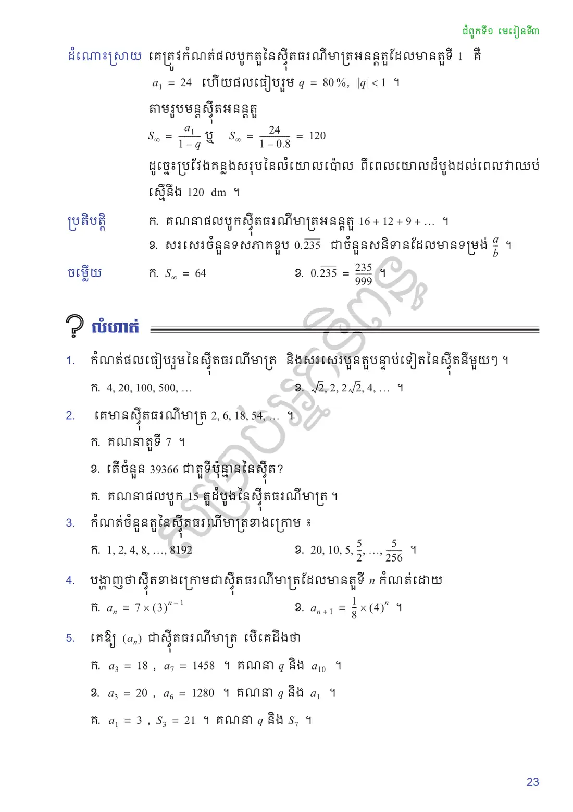
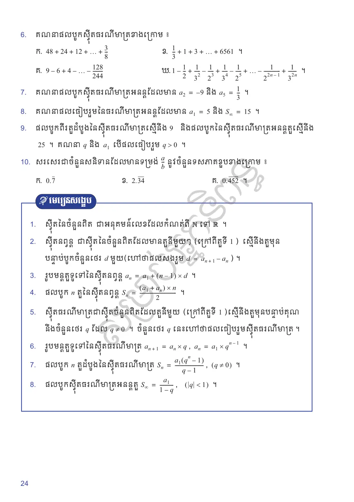
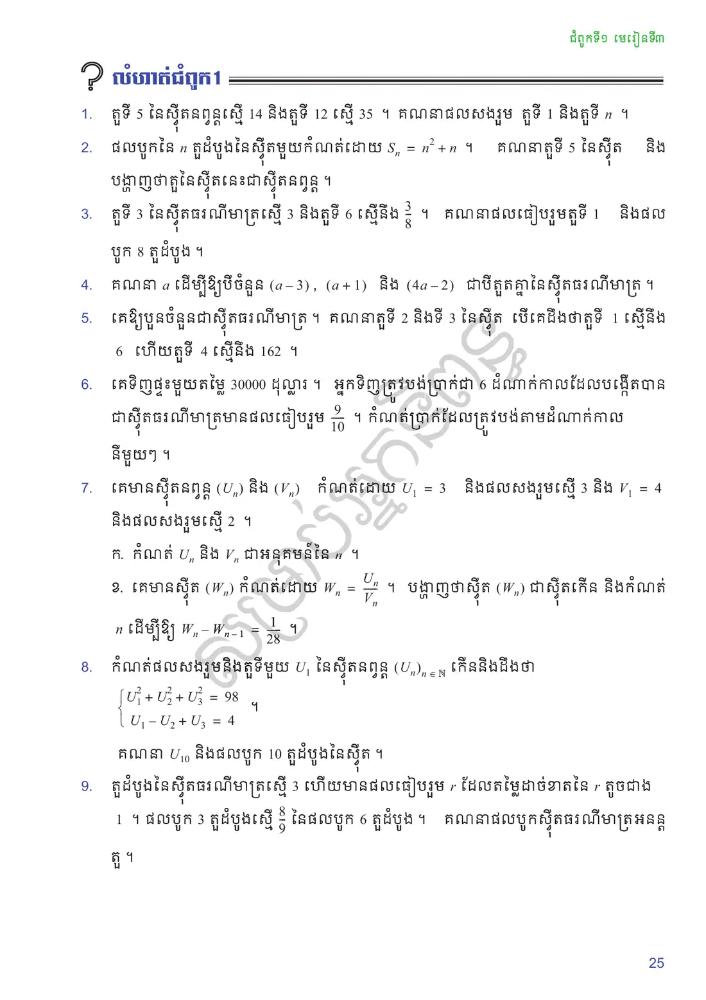
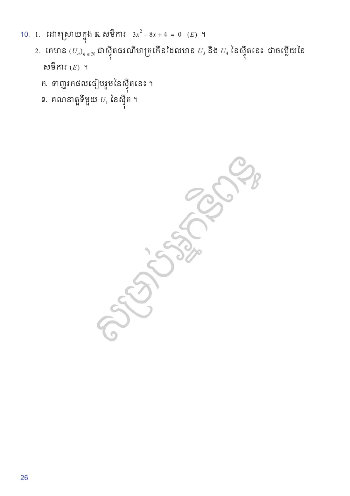
លំហាត់អនុវត្តន៍
កំណត់ផលធៀបរួមនៃស៊ីតធរណីមាត្រ និងសរសេរបួនតួបន្ទាប់ទៀតនៃស៊ីតនីមួយៗ ។
\(4, 20, 100, 500, \ldots\)
\(\sqrt{2}, 2, 2\sqrt{2}, 4, \ldots\) ។
គេមានស៊ីតធរណីមាត្រ \(2, 6, 18, 54, \ldots\) ។
គណនាតួទី \(7\) ។
តើចំនួន \(39366\) ជាតួទីប៉ុន្មាននៃស៊ីត?
គណនាផលបូក \(15\) តួដំបូងនៃស៊ីតធរណីមាត្រ ។
កំណត់ចំនួនតួនៃស៊ីតធរណីមាត្រខាងក្រោម ៖
\(1, 2, 4, 8, \ldots, 8192\)
\(20, 10, 5, \frac{5}{2}, \ldots, \frac{5}{256}\) ។
បង្ហាញថាស៊ីតខាងក្រោមជាស៊ីតធរណីមាត្រដែលមានតួទី \(n\) កំណត់ដោយ
\(a_n = 7 \times (3)^{n-1}\)
\(a_{n+1} = \frac{1}{8} \times (4)^n\) ។
គេឱ្យ \((a_n)\) ជាស៊ីតធរណីមាត្រ បើគេដឹងថា
\(a_3 = 18\), \(a_7 = 1458\) ។ គណនា \(q\) និង \(a_{10}\) ។
\(a_3 = 20\), \(a_6 = 1280\) ។ គណនា \(q\) និង \(a_1\) ។
\(a_1 = 3\), \(S_3 = 21\) ។ គណនា \(q\) និង \(S_7\) ។
គណនាផលបូកស៊ីតធរណីមាត្រខាងក្រោម ៖
\(48 + 24 + 12 + \ldots + \frac{3}{8}\)
\(\frac{1}{3} + 1 + 3 + \ldots + 6561\)
\(9 - 6 + 4 - \ldots - \frac{128}{244}\)
\(1 - \frac{1}{2} + \frac{1}{3^2} - \frac{1}{2^3} + \frac{1}{3^4} - \frac{1}{2^5} + \ldots - \frac{1}{2^{2n-1}} + \frac{1}{3^{2n}}\) ។
គណនាផលបូកស៊ីតធរណីមាត្រអនន្តដែលមាន \(a_2 = -9\) និង \(a_5 = \dfrac{1}{3}\) ។
គណនាផលធៀបរួមនៃធរណីមាត្រអនន្តដែលមាន \(a_1 = 5\) និង \(S_\infty = 15\) ។
ផលបូកពីរតួដំបូងនៃស៊ីតធរណីមាត្រស្មើនឹង \(9\) និងផលបូកនៃស៊ីតធរណីមាត្រអនន្តតួស្មើនឹង \(25\) ។ គណនា \(q\) និង \(a_1\) បើផលធៀបរួម \(q > 0\) ។
សរសេរជាចំនួនសនិទានដែលមានទម្រង់ \(\frac{a}{b}\) នូវចំនួនទសភាគខួបខាងក្រោម ៖
\(0.\overline{7}\)
\(2.\overline{34}\)
\(0.\overline{452}\) ។
សំណួរពហុជ្រើសរើស
ជ្រើសរើសចម្លើយត្រឹមត្រូវតែមួយ រួចចុច «ពិនិត្យ»។ ចម្លើយរបស់អ្នកត្រូវបានរក្សាទុកក្នុងកុំព្យូទ័រនេះ។
✎ សំណួរទី ១–១០
✎ សំណួរទី ១១–២០
តេស្តសមត្ថភាព ៖ មេរៀនទី ៣១ ស៊ីតធរណីមាត្រ (វិទ្យាសាស្ត្រសង្គម) — ២០ សំណួរ · ៣៥ នាទី